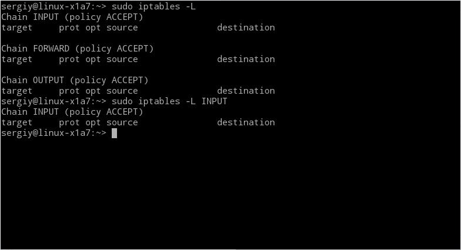
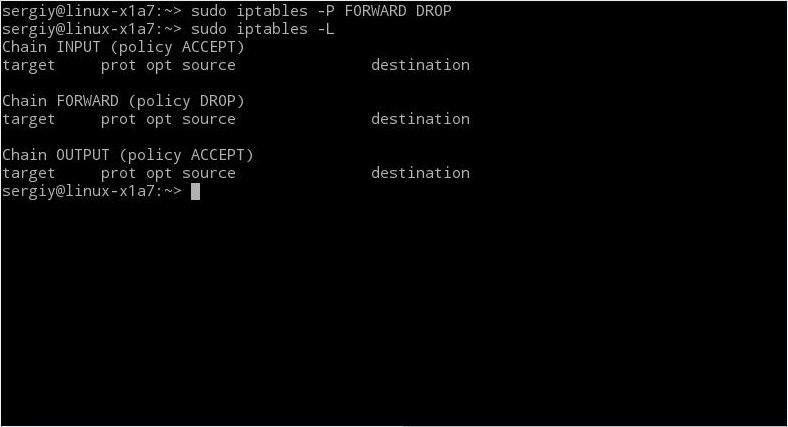
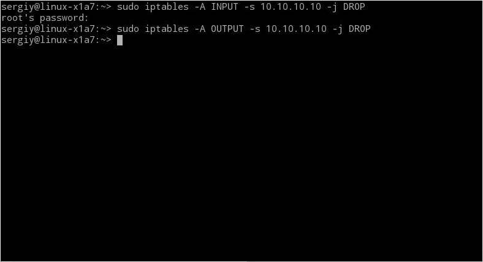
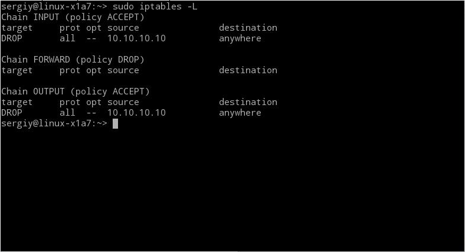
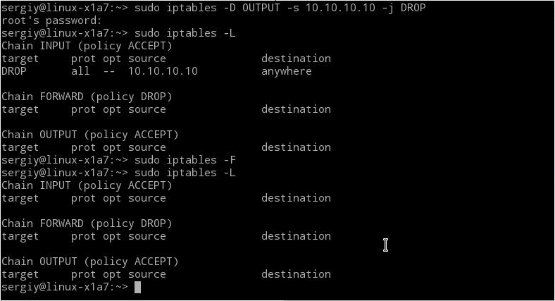

В операционной системе Linux в ядро встроен очень гибкий и надежный фаервол iptables. Именно с помощью этой программы выполняется защита системы от внешних вторжений, перенаправление портов, а также еще очень много действий с трафиком. Но ее минус в том, что она немного сложна в настройке. В этой статье будет рассмотрена настройка iptables для чайников. Я надеюсь, что после нее вы сможете уверенно пользоваться базовыми возможностями iptables.
Подсистема iptables и Netfilter уже достаточно давно встроена в ядро Linux. Все сетевые пакеты, которые проходят через компьютер, отправляются компьютером или предназначены компьютеру, ядро направляет через фильтр iptables. Там эти пакеты поддаются проверкам и затем для каждой проверки, если она пройдена выполняется указанное в ней действие. Например, пакет передается дальше ядру для отправки целевой программе, или отбрасывается.
Все пакеты делятся на три типа: входящие, исходящие и проходящие. Входящие - это те, которые были отправлены на этот компьютер, исходящие - отправленные из этого компьютера в сеть. А проходящие - это пакеты, которые просто должны быть пересланы дальше, например, если ваш компьютер выступает в качестве маршрутизатора.
Соответственно в фильтре iptables все пакеты делятся на три аналогичные цепочки:
Но если вы думаете что можно просто полностью закрыть цепочку Input для увеличения безопасности, то вы очень сильно ошибаетесь. При работе сети используются обе цепочки input и output. Например, вы пытаетесь выполнить ping, данные отправляются через output, но ответ приходит через input. То же самое происходит при просмотре сайтов и других действиях. А вот цепочка forward может вообще не использоваться если ваш компьютер не является маршрутизатором. Так что настройка iptables должна выполняться очень аккуратно.
Перед тем как перейти к созданию списка правил iptables нужно рассмотреть как они работают и какие бывают. Для каждого типа пакетов можно установить набор правил, которые по очереди будут проверяться на соответствие с пакетом и если пакет соответствует, то применять к нему указанное в правиле действие. Правила образуют цепочку, поэтому input, output и forward называют цепочками, цепочками правил. Действий может быть несколько:
Правила могут проверять любые соответствия, например, по ip, по порту получателя или отправителя, заголовкам пакета и многому другому. Если пакет не подходит ни одному из правил, то к нему применяется действие по умолчанию, обычно ACCEPT.
Когда мы разобрались с правилами, можно вернутся обратно к цепочкам. Кроме перечисленных выше, есть еще две дополнительные цепочки правил:
Но это еще не все. У нас еще есть таблицы iptables, с которыми тоже желательно разобраться.
Над цепочками правил в iptables есть еще один уровень абстракции, и это таблицы. В системе есть несколько таблиц, и все они имеют стандартный набор цепочек input, forward и output. Таблицы предназначены для выполнения разных действий над пакетами, например для модификации или фильтрации. Сейчас это для вас не так важно и будет достаточно знать что фильтрация пакетов iptables осуществляется в таблице filter. Но мы рассмотрим их все:
С теорией почти все, теперь давайте рассмотрим утилиту командной строки iptables, с помощью которой и выполняется управление системой iptables.
Подсистема iptables и netfilter встроены в ядро, но вот набор утилит для управления всем этим не всегда поставляется вместе с системой. Для установки утилиты в Ubuntu наберите:
sudo apt install iptables
А в дистрибутивах, основанных на Fedora, установка iptables выполняется немного по-другому:
sudo yum install iptables
Когда установка iptables будет завершена, можно переходить к настройке, но давайте сначала рассмотрим синтаксис утилиты. Обычно команда имеет такой общий вид:
$ iptables -t таблица действие цепочка дополнительные_параметры
еперь давайте рассмотрим параметры iptables, таблица указывает таблицу, с которой нужно работать, этот параметр можно упустить, действие - нужное действие, например, создать или удалить правило, а дополнительные параметры описывают действие и правило, которое нужно выполнить.
Осталось рассмотреть основные действия, которые позволяет выполнить iptables:
Дополнительные опции для правил:
Теперь вы можем перейти рассмотрению примеров того как выполняется настройка iptables.
Мы рассмотрим несколько основных примеров, чтобы вы смогли закрепить все прочитанное выше.
Сначала давайте рассмотрим как выполняется просмотр правил iptables, для этого достаточно опции -L:
iptables -L

Также вы можете указать нужную цепочку, чтобы вывести правила только для нее:
iptables -L INPUT
Вы не можете просто так отключить iptables остановив сервис обновления правил iptables через systemd или даже удалив набор утилит для настройки. Подсистема работает на уровне ядра и не зависит от того, что там у вас установлено. Поэтому если сделаете что-то не так, то нужно будет очистить правила. Для этого выполните:
sudo iptables -F
Или только для определенной цепочки:
sudo iptables -F Input
Напоминаю, что все эти действия выполняются для таблицы по умолчанию - filter.
Как я уже говорил, если для пакета не подходит ни одно правило, то для него применяется действие по умолчанию. Его можно задать с помощью опции -P:
$ sudo iptables -P INPUT ACCEPT
$ sudo iptables -P OUTPUT ACCEPT
$ sudo iptables -P FORWARD DROP
В этом примере мы разрешаем цепочки INPUT и OUTPUT, но запрещаем FORWARD.
sudo iptables -L

Для блокировки пакетов мы можем использовать действие DROP, фильтровать пакеты, которые нужно заблокировать мы можем по множеству критериев, например, протоколу, ip адресу, маске сети, порту и многому другому.
Вот так будет выглядеть команда, которая позволяет добавить правило iptables для блокировки всех входящих пакетов от 10.10.10.10:
sudo iptables -A INPUT -s 10.10.10.10 -j DROP
А теперь исходящие пакеты на этот же адрес:
sudo iptables -A OUTPUT -s 10.10.10.10 -j DROP

Блокировка диапазона ip выполняется подобным образом. Для этого нужно использовать маску сети 10.10.10.0/24. Это будут все адреса начиная от 10.10.10.0 до 10.10.10.255:
sudo iptables -A INPUT -s 10.10.10.0/24 -j DROP
Или расширенный вариант маски:
sudo iptables -A INPUT -s 10.10.10.0/255.255.255.0 -j DROP
Также вы можете заблокировать все входящие соединения ssh:
sudo iptables -A INPUT -p tcp --dport ssh -s 10.10.10.10 -j DROP
Как видите, добавить правило iptables очень просто.
Удаление правил iptables выполняется точно так же, как и создание новых, только вместо опции A нужно использовать опцию D. Сначала смотрим список правил:
sudo iptables -L

Например, вот так можно удалить правило iptables, которое было создано вторым:
sudo iptables -A OUTPUT -s 10.10.10.10 -j DROP
Также вы можете полностью очистить iptables выполнив команду с опцией -F:
sudo iptables -F

Все настройки iptables, которые вы указали с помощью этих команд сохранятся только до перезагрузки. После перезагрузки компьютера все изменения будут стерты. Поэтому чтобы сохранить правила iptables, нужно выполнить специальную команду. Только в разных дистрибутивах она отличается. В Ubuntu выполните:
sudo /sbin/iptables-save
А в Red Hat или CentOS:
sudo /sbin/service iptables save
Вот и все. Наша статья о том, как выполняется настройка iptables для чайников подошла к концу. Эта система действительно сложна, на первый взгляд, но если разобраться, то с помощью нее возможно делать очень интересные вещи. В этой статье была рассмотрены основы использования iptables, в следующих статьях мы более подробно остановимся на практическом применении.